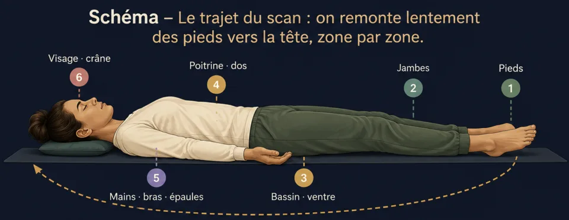
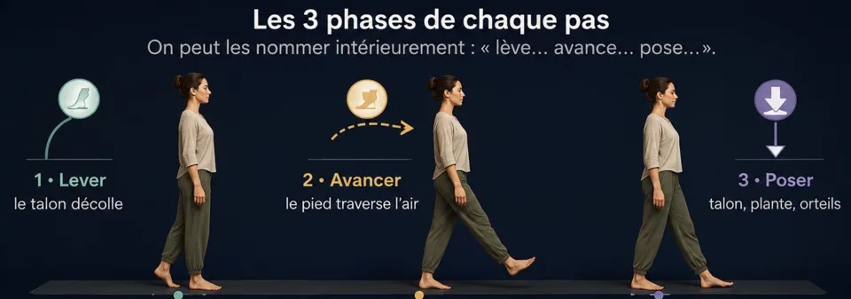
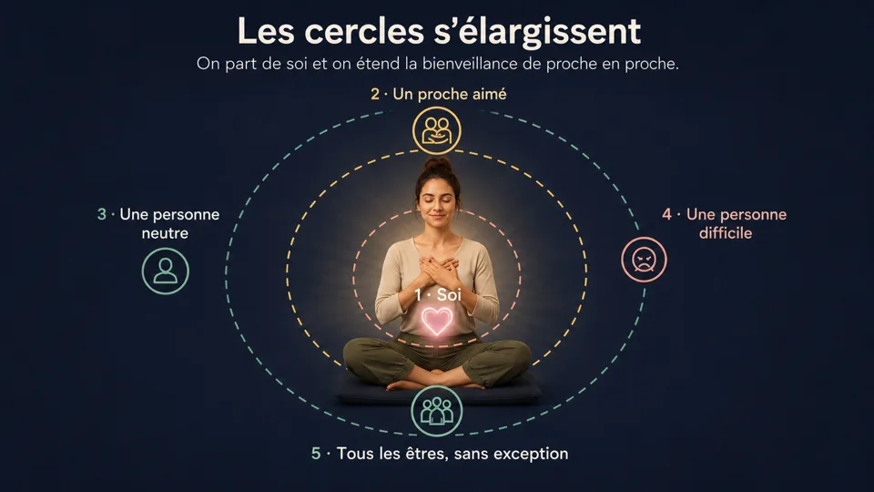
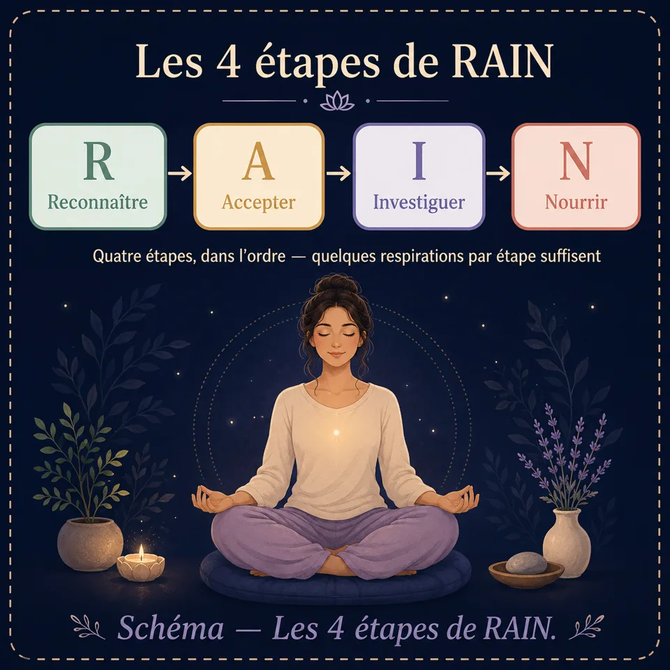

Techniques de méditation expliquées une à une
Les techniques de méditation, une à une : scan corporel, méditation marchée, bienveillance, RAIN, visualisation… avec leurs étapes et leur schéma.
Scan corporel, méditation marchée, bienveillance, visualisation, méthode RAIN… Derrière le mot « méditation » vivent des techniques très différentes, chacune avec sa force. Ce guide les explique une à une — comment les pratiquer, quand les choisir, et à qui elles conviennent.
Les techniques de méditation du menu
Respiration consciente
La porte d'entrée de toutes les méditations. On pose simplement l'attention sur les sensations du souffle, sans le modifier. C'est la technique à maîtriser en premier : toutes les autres s'appuient sur elle.
Déroulé pas à pas
- Installez votre posture (section 2) et fermez les yeux ou baissez le regard.
- Prenez 3 grandes respirations pour marquer l'entrée dans la séance, puis laissez le souffle redevenir naturel.
- Choisissez votre point d'observation : l'air frais aux narines, la poitrine qui se soulève, ou le ventre qui gonfle. Gardez le même toute la séance.
- Observez chaque respiration du début de l'inspiration à la fin de l'expiration, comme une vague complète.
- Quand l'esprit part (il partira !), notez « pensée », souriez intérieurement, revenez au souffle.
- Pour finir, élargissez l'attention aux sons, au corps entier, puis ouvrez les yeux lentement.
Scan corporel (body scan)
Un voyage de l'attention à travers le corps, des orteils au sommet du crâne. Excellente pour relâcher les tensions accumulées, se reconnecter aux sensations et préparer le sommeil. Se pratique allongé ou assis.

Déroulé pas à pas
- Allongez-vous (ou asseyez-vous), prenez 5 respirations abdominales pour vous poser.
- Portez l'attention sur les orteils du pied gauche. Que sentez-vous ? Chaleur, contact, picotement… ou rien du tout — « rien » est aussi une observation valable.
- Remontez zone par zone : pied, cheville, mollet, genou, cuisse… puis l'autre jambe, le bassin, le ventre, le dos, les mains et les bras, les épaules, le cou, le visage, le crâne.
- À chaque zone, restez 3 à 5 respirations. Sur une tension, imaginez que l'expiration la traverse et l'adoucit.
- Terminez en ressentant le corps entier, unifié, pendant quelques respirations.
Pleine conscience (mindfulness)
Être pleinement présent à ce qui est, instant après instant, sans juger. En séance, on observe tour à tour le souffle, les sons, les sensations et les pensées. Hors séance, on l'applique aux gestes du quotidien — manger, marcher, se doucher.
Déroulé pas à pas (séance formelle)
- Stabilisez-vous 2–3 minutes sur la respiration consciente.
- Ouvrez aux sons : accueillez-les comme ils viennent, proches ou lointains, sans les nommer ni les commenter.
- Ouvrez aux sensations : contacts, températures, tensions — le corps comme un paysage.
- Ouvrez aux pensées et émotions : regardez-les apparaître et disparaître, comme des bulles.
- Reposez-vous dans la présence ouverte : plus d'objet particulier, juste être là, conscient de tout ce qui se présente.
- Revenez au souffle 1 minute avant de conclure.
La version quotidienne : l'exercice du raisin 🍇
Prenez un aliment simple (raisin sec, carré de chocolat). Observez-le 30 secondes comme si c'était la première fois : couleur, texture, odeur. Posez-le en bouche sans croquer. Explorez. Croquez enfin, très lentement. Cet exercice fondateur montre combien nos gestes sont automatiques — et ce que « présence » veut dire.
Marche méditative
Méditer en mouvement. Parfaite pour ceux qui « n'arrivent pas à rester assis », pour lutter contre la somnolence, ou pour faire une pause active. Se pratique sur quelques mètres, en intérieur comme en extérieur.

Déroulé pas à pas
- Choisissez un couloir de 5 à 10 mètres, tranquille. Debout, immobile, sentez d'abord vos appuis 30 secondes.
- Marchez très lentement — bien plus lentement que d'habitude. Mains jointes devant ou derrière le corps, regard posé à 2 m devant.
- Décomposez chaque pas : lever · avancer · poser. Sentez le transfert du poids d'un pied à l'autre.
- Au bout du couloir, arrêtez-vous, respirez une fois, tournez-vous en conscience, repartez.
- Esprit ailleurs ? Arrêtez-vous une seconde, revenez aux sensations des pieds, repartez.
Bienveillance (Metta)
Cultiver activement la bienveillance, envers soi puis envers les autres, en répétant intérieurement des souhaits sincères. Cette pratique adoucit l'autocritique, apaise les relations difficiles et développe chaleur et empathie.

Déroulé pas à pas
- Posez-vous 2 minutes sur le souffle, une main sur le cœur si cela vous aide.
- Pour vous-même, répétez lentement : « Que je sois en sécurité. Que je sois en bonne santé. Que je sois en paix. Que je vive avec aisance. » Laissez chaque phrase résonner.
- Visualisez un proche aimé et adressez-lui les mêmes souhaits : « Que tu sois en sécurité… »
- Puis une personne neutre (un commerçant, un voisin croisé) — même formule.
- Puis, si vous vous sentez prêt, une personne difficile. Commencez modestement : quelqu'un de légèrement agaçant, pas votre pire conflit.
- Élargissez enfin à tous les êtres : « Que tous les êtres soient en paix. »
Visualisation
Utiliser l'imagerie mentale comme support de méditation. On construit intérieurement un lieu ou une image ressource (plage, forêt, lumière) et on l'habite avec les cinq sens. Très utile pour l'apaisement, la confiance et la préparation mentale.
Déroulé pas à pas — le « lieu sûr »
- Fermez les yeux, 5 respirations abdominales.
- Laissez venir un lieu où vous vous sentez bien — réel ou imaginaire : une plage, une clairière, une pièce chaleureuse.
- Construisez-le sens par sens : que voyez-vous (couleurs, lumière) ? Qu'entendez-vous (vagues, vent) ? Que sentez-vous sur la peau (chaleur, brise) ? Une odeur ? Un goût ?
- Installez-vous dans la scène. Trouvez-y votre place exacte, votre position. Respirez comme si vous y étiez.
- Ancrez le lieu : donnez-lui un nom ou associez-le à un geste (pouce contre index). Vous pourrez y « revenir » en quelques secondes dans une journée stressante.
- Quittez la scène en douceur, revenez aux sons réels, bougez les doigts, ouvrez les yeux.
Méditation avec mantra
Répéter un son, un mot ou une phrase comme point d'ancrage, à la place du souffle. Le rythme de la répétition occupe l'esprit discursif et induit une absorption calme. Idéal pour les esprits très bavards, que le silence du souffle laisse trop de place aux pensées.
Choisir son mantra
Le sens importe moins que la sonorité et la neutralité : choisissez un mot qui ne déclenche pas de réflexion, et gardez le même plusieurs semaines.
Déroulé pas à pas
- Posture, yeux fermés, 3 grandes respirations.
- Commencez à voix basse : répétez le mantra doucement, 1 à 2 minutes, en sentant sa vibration.
- Passez au murmure, puis à la répétition purement mentale, calée sur le souffle (par ex. « so » à l'inspiration, « ham » à l'expiration).
- Laissez le mantra tourner tout seul. S'il ralentit, s'estompe ou se déforme, c'est bon signe : n'interférez pas.
- Esprit parti ? Reprenez simplement la répétition, sans commentaire.
- Terminez par 1 minute de silence, en observant l'écho du mantra.
Sommeil et relaxation profonde
La seule méditation où s'endormir est une réussite. On combine respiration apaisante, scan corporel descendant et visualisation douce pour amener le système nerveux en mode repos. À pratiquer au lit, lumières éteintes.
Déroulé pas à pas
- Préparez le terrain : écrans éteints 30 minutes avant, chambre fraîche et sombre, allongé sur le dos ou dans votre position d'endormissement.
- 4 cycles de 4-7-8 (voir section Respiration) pour enclencher la détente.
- Scan corporel descendant : cette fois du crâne vers les pieds. À chaque zone, murmurez intérieurement « se relâche » : le front se relâche, la mâchoire se relâche, les épaules…
- Alourdissement : imaginez le corps qui s'enfonce doucement dans le matelas, de plus en plus lourd à chaque expiration.
- Image douce : laissez flotter une scène calme (le lieu sûr de la visualisation) sans chercher à la préciser.
- Si le sommeil ne vient pas, aucun enjeu : rester dans cette détente repose déjà profondément. Le lâcher-prise sur « il FAUT que je dorme » est précisément ce qui permet de dormir.
")

Observation (Vipassana)
Observer finement tout ce qui apparaît — sensations, pensées, émotions — pour en percevoir la nature changeante et impermanente. Là où la respiration consciente concentre, Vipassana explore. Prérequis : être à l'aise avec 15 minutes de respiration consciente.
Déroulé pas à pas
- Stabilisez l'attention 5–10 minutes sur le souffle : c'est le socle indispensable.
- Élargissez aux sensations corporelles : balayez le corps et arrêtez-vous sur ce qui se manifeste — chaleur, pression, pulsation, picotement.
- Observez chaque sensation avec équanimité : ni la retenir si elle est agréable, ni la fuir si elle est désagréable. Regardez-la naître, changer, disparaître.
- Étiquetez ce qui vous traverse : « pensée », « tension », « agacement », « envie de bouger » — puis revenez à l'observation.
- Remarquez l'impermanence : tout ce que vous observez apparaît puis passe. C'est l'intuition centrale de la pratique.
- Refermez la séance par 2 minutes de souffle et un moment de bienveillance envers vous-même.
Présence ouverte (Zazen / Shikantaza)
« Simplement s'asseoir. » Ni objet de concentration, ni technique : une présence totale et sans but à l'instant. C'est la plus dépouillée des pratiques — et paradoxalement l'une des plus exigeantes, car il n'y a « rien à faire » et donc nulle part où se raccrocher.
Déroulé pas à pas
- La posture EST la pratique : installez-la avec une attention particulière (section 2). En zazen traditionnel : yeux mi-clos, regard posé à 1 m devant soi, mains en ovale sur les cuisses, pouces qui se touchent.
- Quelques respirations profondes, puis laissez le souffle libre.
- Ne prenez aucun objet : ne suivez pas le souffle, ne comptez rien, ne visez rien. Soyez la pièce entière : sons, lumière, corps, souffle, pensées — tout à la fois, rien en particulier.
- Quand une pensée vous embarque, revenez à la sensation d'être assis — le poids, la verticalité, le contact.
- Restez immobile jusqu'au signal de fin. L'immobilité du corps enseigne la stabilité de l'esprit.
Méditation de gratitude
Orienter délibérément l'attention vers ce qui va bien. Le cerveau a un biais de négativité : il retient dix fois mieux ce qui menace que ce qui nourrit. La gratitude est un contre-entraînement simple, dont l'effet sur l'humeur et le sommeil est l'un des mieux documentés en psychologie positive.
Déroulé pas à pas
- Posez-vous 1–2 minutes sur le souffle, une main sur le cœur si vous aimez ce geste.
- Laissez venir 3 choses de votre journée pour lesquelles vous pouvez dire merci. Petites de préférence : un rayon de soleil, un message reçu, un café chaud. Le concret bat le grandiose.
- Pour chacune, revivez la scène quelques respirations : où étiez-vous, qu'avez-vous ressenti ? Laissez la sensation agréable s'installer dans le corps (chaleur, détente, sourire).
- Incluez une personne : visualisez quelqu'un qui a contribué, même indirectement, à votre journée, et adressez-lui un merci intérieur.
- Terminez par vous-même : une chose que VOUS avez faite aujourd'hui et que vous reconnaissez. C'est souvent l'étape oubliée — et la plus transformatrice.
Accueillir une émotion difficile (RAIN)
Un protocole en 4 étapes pour traverser une émotion forte — colère, anxiété, tristesse, honte — au lieu de la fuir ou de s'y noyer. RAIN est l'acronyme anglais de Recognize, Allow, Investigate, Nurture. C'est la technique à dégainer quand « ça déborde ».

Déroulé pas à pas
- R — Reconnaître : nommez ce qui est là, simplement : « il y a de la colère », « il y a de l'anxiété ». Dire « il y a de la colère » plutôt que « je suis en colère » crée déjà un espace.
- A — Accepter : autorisez l'émotion à être présente, le temps de cette pratique. Pas l'approuver — juste cesser de lutter contre le fait qu'elle soit là. Vous pouvez murmurer « oui » ou « c'est là ».
- I — Investiguer : avec curiosité, explorez-la dans le corps : où se loge-t-elle ? Gorge serrée, poitrine chaude, ventre noué ? Quelle taille, quelle température ? Reste-t-elle fixe ou bouge-t-elle ? Restez côté sensations, pas côté histoire (« il a dit que… »).
- N — Nourrir : offrez-vous ce dont cette part de vous a besoin : une main sur le cœur, une phrase douce (« c'est difficile, et je suis là »), l'image d'un proche bienveillant. Traitez-vous comme vous traiteriez un ami dans le même état.
- Après la pluie : restez quelques respirations dans le calme relatif qui suit, sans rouvrir le dossier mentalement.
Micro-méditations SOS (1 à 3 minutes)
Des pratiques éclair pour les moments chauds : avant une prise de parole, après un mail agaçant, dans une file d'attente, au milieu d'une journée qui déraille. Aucune posture requise — debout, assis, en marchant, yeux ouverts.
🛑 La méthode STOP (1 minute)
- S — Stoppez : interrompez ce que vous faites, une seconde.
- T — Take a breath : une respiration profonde, ventre qui se gonfle, expiration longue.
- O — Observez : que se passe-t-il là, maintenant ? Corps, émotions, pensées — un scan éclair de 3 respirations.
- P — Poursuivez : reprenez votre activité, en choisissant consciemment la suite.
🖐 L'ancrage 5-4-3-2-1 (2 minutes) — anti-anxiété
Quand l'esprit s'emballe, revenez aux sens : nommez 5 choses que vous voyez, 4 que vous entendez, 3 que vous touchez, 2 que vous sentez (odeurs), 1 que vous goûtez. Impossible de ruminer et d'inventorier ses sens en même temps.
🌬 Le soupir physiologique (30 secondes)
Deux inspirations par le nez enchaînées (une grande + une petite pour « compléter »), puis une longue expiration par la bouche. Répétez 3 fois. C'est le moyen le plus rapide connu de faire retomber une montée de stress.
Méditation sonore (écoute profonde)
Faire des sons son ancrage. Au lieu de lutter contre le bruit (voisins, rue, open space), on en fait le support même de la méditation. Très accessible : les sons captent naturellement l'attention, il n'y a qu'à écouter. Idéale aussi pour ceux que le souffle ennuie ou angoisse.
Déroulé pas à pas
- Posture, yeux fermés, 3 respirations pour arriver.
- Ouvrez les oreilles en grand : accueillez tous les sons, sans en chercher aucun. Proches, lointains, continus, brefs.
- Écoutez comme on regarde un paysage : les sons apparaissent, vivent, disparaissent. N'étiquetez pas (« voiture », « frigo ») — restez avec la matière sonore : grave/aigu, proche/loin, rugueux/lisse.
- Remarquez les silences entre les sons — l'espace dans lequel tout cela apparaît.
- Quand une pensée vous embarque (souvent déclenchée par un son : « qui klaxonne encore ?! »), notez « pensée » et revenez à l'écoute nue.
- Terminez en incluant le son le plus proche de tous : votre propre respiration.
Quelle technique choisir ? Tableau de correspondance
| Votre besoin | Technique recommandée | Niveau |
|---|---|---|
| Découvrir la méditation | Respiration consciente | Débutant |
| Stress, tensions physiques | Scan corporel · Cohérence cardiaque | Débutant |
| Mieux dormir | Sommeil et relaxation · 4-7-8 | Débutant |
| Impossible de rester assis | Marche méditative | Débutant |
| Esprit très bavard | Mantra · Respiration carrée | Intermédiaire |
| Autocritique, relations difficiles | Bienveillance (Metta) | Intermédiaire |
| Préparation mentale, confiance | Visualisation | Intermédiaire |
| Approfondir la connaissance de soi | Vipassana | Avancé |
| Simplicité radicale, lâcher-prise | Zazen | Avancé |
| Moral en berne, ruminations négatives | Gratitude | Débutant |
| Émotion forte à traverser (colère, anxiété…) | RAIN · Soupir physiologique | Intermédiaire |
| « Zéro temps » dans la journée | Micro-méditations SOS (STOP, 5-4-3-2-1) | Débutant |
| Environnement bruyant · souffle inconfortable | Méditation sonore | Débutant |
Pratiquer avec l’application
Envie de pratiquer plutôt que de lire ?
Tout ce que décrit cet article se pratique dans MeditaDream, application de méditation gratuite : 129 méditations guidées et 17 mondes immersifs en français, sans abonnement, sans publicité, sans compte, et tout fonctionne hors ligne.
✦ Découvrir l'application gratuite